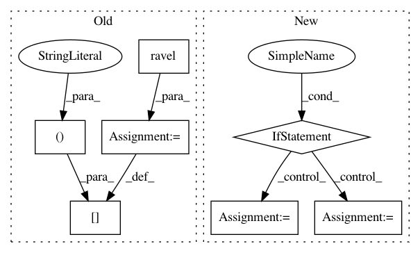

acdb39c2f40fa90a033e895f09d8d02b02e85e9b,dipy/reconst/fwdti.py,,nlls_fit_tensor,#Any#Any#Any#Any#Any#Any#Any#,497
Before Change
evals, evecs = decompose_tensor(
from_lower_triangular(start_params[:6]))
fw_params[vox, :3] = evals
fw_params[vox, 3:] = evecs.ravel()
fw_params[vox, 12] = start_params[7]
fw_params[vox, 13] = np.exp(-start_params[6])
fw_params.shape = data.shape[:-1] + (14,)
After Change
sigma,
cholesky))
if cholesky:
this_tensor[:6] = cholesky_to_lower_triangular(this_tensor[:6])
this_tensor[7] = 0.5 * (1 + np.sin(this_tensor[7] - np.pi/2))
// The parameters are the evals and the evecs:
evals, evecs = decompose_tensor(from_lower_triangular(this_tensor[:6]))
fw_params[vox, :3] = evals
fw_params[vox, 3:12] = evecs.ravel()
fw_params[vox, 12] = this_tensor[7]
In pattern: SUPERPATTERN
Frequency: 4
Non-data size: 7
Instances
Project Name: nipy/dipy
Commit Name: acdb39c2f40fa90a033e895f09d8d02b02e85e9b
Time: 2016-08-29
Author: rafaelnh21@gmail.com
File Name: dipy/reconst/fwdti.py
Class Name:
Method Name: nlls_fit_tensor
Project Name: nipy/dipy
Commit Name: ede16d13e33e1fa0708e2547abee9a9c7dace1d1
Time: 2016-08-29
Author: rafaelnh21@gmail.com
File Name: dipy/reconst/fwdti.py
Class Name:
Method Name: nlls_fit_tensor
Project Name: SheffieldML/GPy
Commit Name: ed3f6c56c22a7fafa4aa7e4aefd2639e00c0a668
Time: 2017-07-03
Author: akash.dhaka@aalto.fi
File Name: GPy/likelihoods/likelihood.py
Class Name: Likelihood
Method Name: ep_gradients
Project Name: SheffieldML/GPy
Commit Name: 8b621a409cd07d0f5610a2648b6413322c39a822
Time: 2017-08-10
Author: akash.dhaka@aalto.fi
File Name: GPy/likelihoods/likelihood.py
Class Name: Likelihood
Method Name: ep_gradients